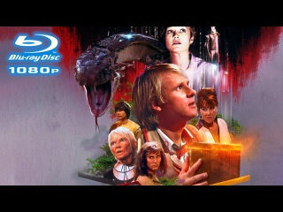
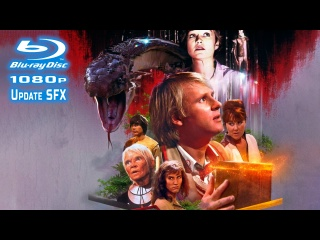
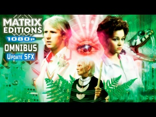
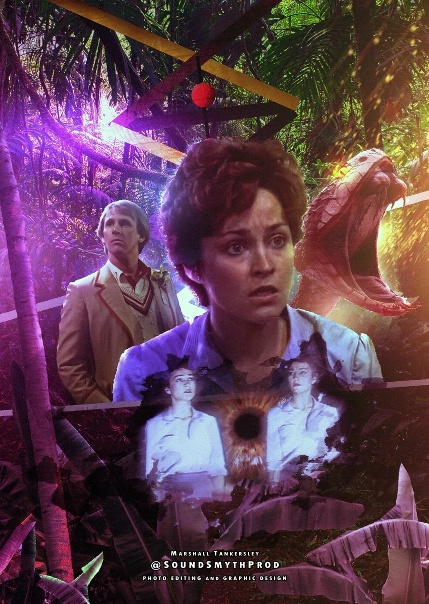
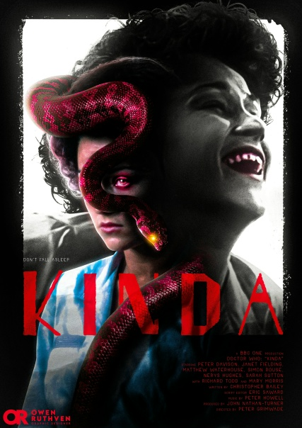
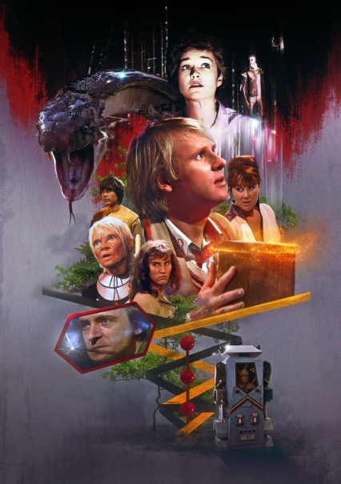
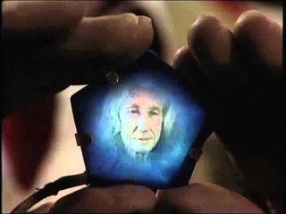

камео

Субтитры: Русские и Английские |  |
|---|---|
с обновленными спецэффектами (эпизод 4) Субтитры: Русские и Английские |  |
с обновлением визуальных эффектов (cunningmunki) Субтитры: отсутствуют |  |
Kinda
Дата выхода: 1-9 февраля 1982
Формат: 4 эпизода по 25 мин.
| камео | |
ТАРДИС приземляется на Дэва Локе — планете джунглей, где земная экспедиция теряет людей одного за другим. Нисса остаётся в ТАРДИС, а Доктор, Тиган и Адрик выходят исследовать. Тиган засыпает под странными ветряными колокольчиками — и что-то начинает проникать в её сны. Местное племя кинда кажется мирным, но у них есть особенность: говорить умеют только женщины. Один из земных колонистов, Хиндл, теряет рассудок и берёт базу под свой контроль. Сценарий Кристофера Бейли построен на буддийской мифологии — имена всех героев и существ взяты оттуда: Дуккха — «страдание», Панна — «мудрость», Каруна — «сострадание». Финальная змея-Мара получилась настолько нелепой из-за нехватки съёмочного времени, что продюсеры добились увеличения студийного графика с пяти до шести дней.
VHS - октябрь 1994 |  DVD+Boxset - 7 марта 2011 |  Blu-ray - 10 декабря 2018 * Версия в нашей группе |
|---|



